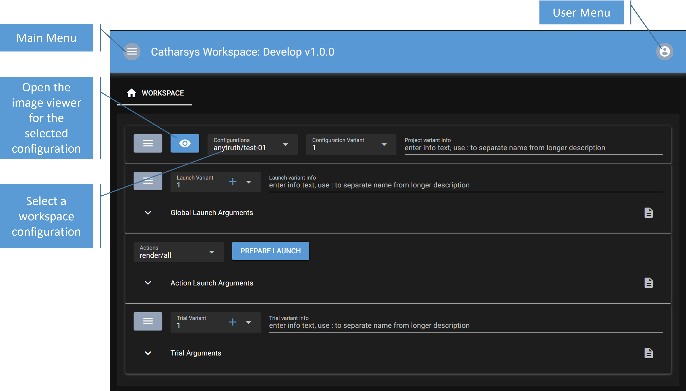

Catharsys Web GUI - Getting Started#
The Catharsys Web GUI is a web server that you start for a specific Catharsys workspace. The main idea is, that you can expose specific variables of your Catharsys configurations to be shown and modified in a web GUI. In this way, also people not familiar with a specific Catharsys configuraton setup, can run render jobs and vary the important parameters.
However, currently, the GUI can’t be used to create a full configuration setup. This will be developed step-by-step.
Even if you are not using the GUI to start your renders, you can still use the image viewer to get a better overview of all the images and ground truth data rendered in the various variations.
Installation#
The GUI module is installed as part of the normal Catharsys installation starting with Catharsys version 3.2.31. You can check whether it’s available with the command:
cathy gui -h
Setup#
You start the GUI by executing the command cathy gui ws inside a workspace folder. This starts a webserver and opens a browser that opens the served page. The command cathy gui ws has to be run from the top folder of a Catharsys workspace. The GUI does not allow you to work with multiple workspaces at the same time. Since this command starts a web server, it can be accessed by anyone who can access ports on your machine via the network. If you have a firewall or are on a local machine with no network access, you can just run cathy gui ws. This will start a web server with public access and open a web browser pointing to this server.
Users#
If you need to secure access to the web server, you should create an admin user from the command line with:
cathy gui ws --add-admin [your username]
You will be prompted for a password, which you need to repeat in a second step. This user and password are completely independent of your Windows/Linux user. This is just used for this web server. The user data is stored in the file .cathgui/[Windows/Linux username]/gui-web-user.json, where the passwords are hashed.
This is just a very simple user management structure. Anybody who has access to the workspace folder, can remove or change the users.
Important
Note that all configuration variants and other settings and result data, are stored independently per OS-user. This allows multiple OS-users to run web servers on the same workspace concurrently.
Web Config#
The first time you start the web server, a configuration file is created in .catharsys/[your conda environment]/gui/gui-web-config.json and a port is chosen automatically by the system. You can set a fixed port here, if you want to change it.
By default, a SSL web connection is created, so you need to access the web server via https://. For this purpose a certificate is created, which is used for the encryption. The created certificate is located at .catharsys/[your conda environment]/gui/localhost-cert.pem. This certificate is, of course, not signed by any authority, so your web browser, will warn you of an insecure connection. Nevertheless, the communication is encrypted, but anybody who has access to your workspace folder can copy this certificate. To use un-encrypted web communication, for example, when running the server just as GUI on your local machine, you can use the --no-ssl command line option.
The Workspace View#
After starting the web server with cathy gui ws in your workspace folder, a web browser should open showing you something like this:

If you press the eye icon, a separate pane opens with the image viewer. For each configuration you can open a separate image viewer. First select the configuration and then press on the eye icon to open the respective viewer. See Web Image Viewer for a detailed description of the image viewer.
The main purpose of this view is to modify the launch, action and trial parameters of a configuration and execute an action. See Modify Configurations for a detailed description of this functionality.